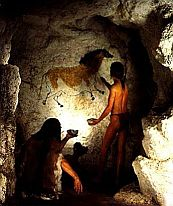
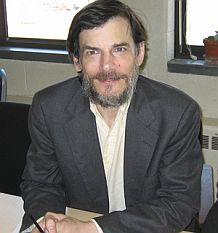
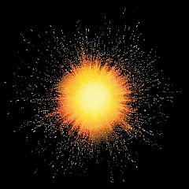

Para Javier, por todos los jiuston y rayos…y por la nada.
En nuestro mundo la vida inicia y termina. Observamos que los animales nacen y luego los vemos morir, es la norma; cualquier desviación de ella la llevamos a las pantallas para nuestro entretenimiento o la convertimos en creencias. Para esos originales primates de características homíninas que emprendieron aquel viaje tan valioso para la evolución del Homo sapiens, el inicio y el término de las cosas, la norma, lo era todo; el infinito y la nada tenían tanto sentido para nuestros primigenios ancestros como el concepto de la dualidad subatómica para un recién nacido. Por ello, es preciso ponerse en los pies de aquel primer individuo que alzó la vista a los cielos y pensó, “¿pero qué es todo esto?” para comprender por qué contamos hoy con tantos datos sobre el Cosmos y por qué, a pesar de ello, aún no logramos aceptarlo como es, sin antropomorfismos.
Aquellos primeros observadores de la naturaleza lo hicieron para sobrevivir. Conocer el medio es vital para la vida de cualquier animal, eso es innegable. Un niño educado en el siglo XXI sabe, al observar una planta, el proceso por el cual los fotones del Sol se convierten en la sangre vegetal llamada clorofila que sustenta sus hojas y permite que el niño, a su vez, convierta el fruto de ese proceso en energía para su cuerpo. El niño cromagnon que buscaba alimento con su familia no conocía esa realidad, mucho menos se hubiese imaginado que la luz que bañaba su rostro aquel día estaba compuesta de unas partículas subatómicas cuya dualidad fastidiaría las neuronas de millones de sus descendientes. Pero sí sabía que tenía que comer, que el hambre es dolorosa y que las frutas y las carnes lo hacían sentir bien. Así, nuestras primeras incursiones a las explicaciones sobre el mundo fueron impulsadas por emociones e instintos pues no teníamos mucho más donde morder; sobrevivir ocupaba la mayor parte de nuestro tiempo.
Pero nuestros antepasados desarrollaban una cada vez más compleja herramienta: el lenguaje. Con esta habilidad, nuestra sed por contar y escuchar historias, entre muchas otras cosas, se hizo evidente. Pensar y narrar nuestras tradiciones y las del mundo dio paso a nuevas preguntas, el espacio personal al que estábamos acostumbrados se ensanchaba gradualmente cada vez que escuchábamos narraciones sobre lugares lejanos y personas que jamás llegaríamos a conocer. Como en aquel libro de Mario Vargas Llosa, El hablador, que cuenta la historia de un narrador ambulante de la tribu Machiguenga en la amazonía peruana y del valor que tenían esos relatos que traía y llevaba a todos aquellos grupos aislados.
Así se fue colmando el mundo de historias y leyendas. El pensamiento mágico, que caracterizaba nuestra percepción ingenua aún sin datos dignos de conclusiones racionales, se apoderó de la ideología humana y convirtió en hábitos las creencias. Demorarían los momentos en que la filosofía y la ciencia alumbraran el camino una y otra vez, pero sería siempre tarde, para entonces, millones habían fundado sus imperios en supersticiones que defenderían con una intensidad que aún no muere, a pesar de que en la actualidad, los descubrimientos científicos brindan al homo sapiens una base empírica sobre la cual construir una idea objetiva del mundo.
“Los poetas dicen que la ciencia le resta belleza a las estrellas al llamarlas meros globos de gas. Yo también puedo ver y sentir las estrellas en una noche desértica pero ¿veo yo más o veo menos?”

Richard Feynman veía más, definitivamente; cualquier entendido del tema advierte mucho más pues conocer te abre los ojos, saber te engrandece en el más humilde sentido de la palabra. Hoy, los que se niegan a conocer porque sus vidas, en mayor o menor grado, están basadas en supersticiones (las de ellos mismos o las de los demás) continúan propagando historias hincadas en el pensamiento mágico y en seres y fenómenos sobrenaturales que nos sitúan en un lugar especial en el mundo. La cruda y grandilocuente realidad es otra muy distinta. El ser humano no es el centro del Universo, de hecho, no existe un momento en el tiempo o el espacio más relevante que otro, el cosmos es indiferente a nosotros, al planeta, al sistema solar y la Vía Láctea, comprender su funcionamiento es una tarea que satisface la curiosidad humana y nos permite avanzar como especie, a lo mejor salvarnos de nosotros mismos, de ser animales finitos en un mundo que aún no comprendemos en su totalidad; pero no tiene que ver con el universo. El cosmos tenía miles de millones de años existiendo antes de que nosotros evolucionáramos en esta insignificante región, si eso no te dice algo sobre la nimiedad de nuestra existencia, y también sobre su espectacularidad, poco lo hará.
Pero intentémoslo: “La singularidad de la gran explosión en nuestro espacio temporal es la singularidad de un agujero negro en otro espacio temporal y este último espacio temporal tiene una singularidad de gran explosión que es la singularidad de un agujero negro en un tercer espacio temporal; y así ad infinitum. Esta hipótesis, yo argumento, explica la existencia, las condiciones iniciales y las constantes físicas básicas de nuestro Universo”.
A que resulta mucho más fácil imaginar el pálido punto azul que es nuestro planeta visto desde millones de kilómetros de distancia y explicado por las racionales palabras de Carl Sagan, que zambullirse en las asombrosas explicaciones sobre el origen del universo del filósofo Quentin Smith (http://www.qsmithwmu.com/) de la Universidad de Michigan, quien piensa que la cosmología de la gran explosión y la cosmología cuántica confirman el ateísmo. Smith asegura que es imprescindible considerar una visión metafísica sobre el Universo, en el sentido de dar explicaciones basadas en probabilidades y modelos más que en evidencias duras, ya que todavía carecemos de la tecnología necesaria para obtenerlas. Por supuesto, no todos están de acuerdo con su visión, muchos decidimos esperar por las evidencias antes de apostar por una cadena infinita de agujeros negros y grandes explosiones aunque, indudablemente, tiene más sentido que pensar que el cosmos surgió de la nada y gracias a un creador, especialmente luego de que la cuántica frustró la nada y nos la devolvió repleta de remanentes de energía. La tabla periódica de la física es una muestra de todos los hilos que componen el lienzo que es el cosmos; y seguimos buscando, colisionando lo más pequeño que existe para ver qué hay dentro y qué tan profundo podemos llegar. Hasta el momento, siempre hay energía, ni siquiera el vacío está completamente vacío. ¿Cómo podría existir la nada?, se preguntaban algunos filósofos, a quienes hasta el cero les resultaba sospechoso, si la nada existiese fuese algo y si es algo ya no es nada. Y si un creador produjo el Cosmos de esta supuesta nada, ¿qué era él entonces y dónde se encontraba? Y, ya que estamos, ¿qué causó al creador? Afortunadamente, estas preguntas ya no son ni siquiera necesarias.
“La idea de una Primera Causa suena algo sospechosa bajo la luz de la teoría moderna de la mecánica cuántica. De acuerdo con la más aceptada interpretación de esta mecánica, partículas subatómicas individuales pueden comportarse de formas impredecibles y existen numerosos eventos al azar que ocurren sin causa alguna”, escribió en su libro Aquiles en el mundo cuántico el físico, autor y poeta estadounidense Richard Morris.
A pesar de que no necesitamos causa alguna, ni el concepto de dios o de una nada inexistente para explicar el universo, la física ha intentado exponer por qué sus leyes son como son, por qué hay cuatro fuerzas y nos dos o diez. Por qué la materia le ganó a la antimateria, por qué el valor de la constante de la estructura fina es ese y no otro, por qué, por qué, por qué. Son preguntas válidas en la psicología humana pero no tienen sentido alguno para el universo; el cosmos responde con medidas, podemos averiguar cómo ocurrió, cuándo y dónde, podemos analizar los mecanismos que lo hacen así, pero el por qué de un universo no tiene sentido en cosmología.
Evidentemente, para que existiésemos, las medidas apropiadas debían darse. Pero esas medidas no están allí con el propósito de que nosotros aparezcamos, es más bien al revés, existimos gracias a que son de ese modo y no de otro. Los seres humanos somos un yoctoaccidente en este portentoso mundo y no vale cuántas veces preguntemos por qué; ni siquiera Stephen Hawking está ya interesado en ese tipo de metafísica espiritual. El popular físico, luego de escribir en su libro Una breve historia del tiempo publicado en 1988 que “un universo originado por una Gran Explosión no excluye un creador”, ahora asegura que en las leyes de la física se encuentra la explicación para lo ocurrido y que no hay necesidad de un concepto divino.
Por supuesto que no la hay, de hecho y en mi humilde opinión, es más difícil explicar cómo él no había alcanzado esa conclusión antes. Sin embargo, las historias creacionistas actuales todavía se empeñan en explicar el mundo basadas en esos términos prehistóricos y negando, selectivamente, el progreso científico.
Pero hoy estamos más unidos que nunca. La red se ha convertido en nuestro perfecto “hablador” moderno con la capacidad para unir a todas las tribus terrestres. Hemos avanzado tanto que existe ahora la esperanza de poder conocer el origen de todo algún día, no es presunción, sólo una forma de leer e interpretar nuestro pasado y presente. Es indudable que somos animales finitos vulnerables a extinciones masivas y, precisamente, en ese momento en que desaparezcamos, la idea de dioses creadores desaparecerá con nosotros pero no así el valor de la constante Alfa; 1/137.036 continuará siendo el mismo, aún no se llame Alfa, aún existan o no individuos que la midan y se pregunten mil veces por qué.
Imagina, razona, experimenta, analiza, comprueba
Ojo con los esquivos neutrinos

En un día inespecífico del siglo IV, Agustín de Hipona respondía a los que aseguraban que el día antes del génesis el Señor preparaba el infierno para aquellos que curiosean en lo profundo. El padre de la iglesia católica explicaba que dios se había encargado de crear el tiempo como una propiedad del universo que no existía antes de aquella sublime creación. Y deseo mostrarle al misógino de Agustín, y a los que como él, han obstaculizado el progreso con ideas prejuiciosas y aterrorizantes, por qué cada vez somos más los que elegimos el infierno y no permitimos que amenazas que invocan a la imaginación los cuadros de Hieronymus Bosch ni cuentos sobre seres sobrenaturales que crean el tiempo y el espacio, aniquilen nuestra preciosa curiosidad.
Hoy, las evidencias acumuladas por décadas de trabajos apuntan hacia una gran explosión hace unos 14,000 millones de años que continúa alejando a las galaxias unas de otras mientras el universo mismo sigue en expansión. Evidentemente, una explosión de este tipo da pie a nuevas interrogantes, la principal, por supuesto, nos recuerda aquella que hizo Agustín: ¿qué había antes de la gran explosión? Es en esa singularidad que los creyentes agnósticos han acorralado hoy a sus dioses. Algunos, más ilustrados, han cambiado el término y se deciden por un principio creador, eso que los científicos llaman singularidad y que no es más que desconocimiento, un sinnúmero de infinitos que pueblan las matemáticas y que aún no logramos explicar; pero desconocer no es evidencia de algo.
Por eso, cuando leemos sobre el pasado humano lo vemos repleto de dioses saltarines. Como Mario en sus primeros juegos, los dioses brincan de un desconocimiento a otro. Un enigma se resuelve y saltan otra vez, buscando el misterio donde asentar su trono nuevamente; nos acomodamos en ese nuevo enigma rezando para que esos amigos invisibles realmente existan y la vida humana no sea finita, para que sea especial.
Estoy dispuesta a cambiar mi visión sobre cómo comenzó el universo en cualquier momento, sólo tienen que demostrarlo. Por el momento, todos estamos de acuerdo en numerosos puntos que mantienen vigente a la teoría estándar de la física moderna, aquí les recuerdo algunos de los más relevantes.

Concordamos en que el universo está en expansión, una afirmación cosmológica pues se observa por todos lados y no sólo en nuestra galaxia. También estamos de acuerdo en que existe un fondo de radiación cósmica que es detectable en las frecuencias microondas. Este fondo siempre me ha maravillado, a lo mejor algún día descubran que se trata de otra cosa pero hasta ahora sabemos que cubre todas las direcciones en el espacio, es decir, todas sus medidas isotrópicas, y que tampoco ocurre en otras frecuencias. Por otro lado, este fondo es lo que llaman un espectro de cuerpo negro, es, de hecho, la única radiación conocida por el humano hasta el momento que posee un perfecto espectro de cuerpo negro. Se piensa que son residuos de la gran explosión, cuando el universo era opaco respecto a su propia radiación.
También está el tema de la abundancia universal de ciertos elementos en proporción a otros, como el helio y el deuterio respecto al hidrógeno, que es consistente con la actual expansión y con la temperatura del fondo cósmico. “Si el universo se estuviese expandiendo más rápido, hubiera menos tiempo para elementos pesados como el helio y el deuterio”, escribe el astrónomo, doctor Sten Odenwald.
Y entonces están los maravillosos neutrinos. A mí el nombre de esta partícula me cautivó en seguida y luego la lectura sobre su extraño comportamiento y sobre el esfuerzo que hay que hacer para capturarlas (http://en.wikipedia.org/wiki/Super-Kamiokande) terminó seduciéndome por completo. Los neutrinos son antisociales y nos les gusta interactuar con la materia, de hecho, miles de millones nos atraviesan cada día sin afectarnos. Por otro lado, el hecho de que sólo haya tres familias de neutrinos mantiene todavía en pie a la teoría estándar de la física moderna. Si otro neutrino fuera de la familia, a los que llaman estériles, llegara a ser descubierto, entonces comenzaríamos a ver otras posibilidades, dentro o fuera de la teoría de la gran explosión. Así que debemos estar pendientes de esos esquivos neutrinos.
Tampoco hemos descubierto objetos que sean más antiguos que el tiempo que tiene el universo en expansión, más aún, el grado del agrupamiento de galaxias es también consistente con el universo descrito por el momento, sin contar con que la entropía del cosmos es enorme. Por cada protón o neutrón de materia en el fondo de radiación cósmica hay 10,000,000,000 fotones. Un número importante de la termodinámica que nos dice cómo el universo ha evolucionado hasta el momento.
Por último, el universo está hoy dominado exclusivamente por la materia y no por una mezcla de materia y antimateria. De hecho, sólo unas pocas teorías, incluyendo la Gran Explosión, pueden explicar esta observación directa sobre este impresionante mundo que habitamos.
Lo dicho, conocer te engrandece. Mirar al cielo y saber lo que ocurre más allá del planeta ya no deja espacio para misticismos ni seres con poderes especiales. Lo que ha ocurrido aquí es aún más extraordinario. Honrémoslo transmitiendo esta información a las siguientes generaciones, es una forma fácil y rápida de asegurar su progreso.
Gracias a Ignacio Loranca Fontana por la apropiada corrección sobre San Agustín.
Volver al índice de la Lupa Herética
© 2008-2023 Glenys Álvarez y Sin Dioses. Prohibida la reproducción con fines comerciales.
Comentarios
Comments powered by Disqus